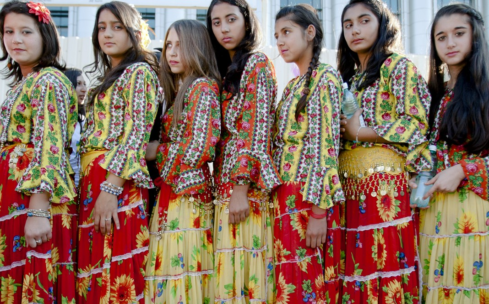

The Melodic Resilience: Romani People in Songs and Raps
The Romani people or Gypsies have a rich and vibrant cultural heritage spread through centuries. It started in northern India and moved all over the world, contributing towards cultural diversity. They suffered historical persecutions and social marginalization for years, but they still made art, music and literature that is still being talked about to date. In this blog, we will be able to see how musicians have portrayed the Romani people in songs and rap showing how they have reinforced stereotypes created about this unique group.
The Romani community had faced persecution throughout Europe including enslavement, forced assimilation, and
discrimination. These historical injustices often result into present-day negative stereotypes. The term
“gypsy” itself is already filled with history and it can further induce hurtful generalizations that
undermine Romani people’s diversity as well as strength.
Due to the continuous mention of stereotypes in songs and rap, the Romani community has long been
struggling with them. These are often founded on deeply embedded historical prejudices and misconceptions
which make society view and treat members of this ethnicity in a particular way.
For example, the term "gypsy" has been widely used in popular culture to encapsulate a romanticized and
exoticized image, but it oversimplifies the Romani community's diverse experiences.
Two popular songs known to use “Gypsy” as an adjective describing bad things about these communities are
Shakira’s “Gypsy”and “Gypsies, Tramps & Thieves” by Cher.
From Cher's "Gypsies, Tramps & Thieves":
"I was born in the wagon of a travelin' show.""Every night, all the men would come around and lay their money down."
These lyrics contribute to the stereotype of Romani people as nomadic and unconventional, reinforcing the stereotype of an itinerant and traveling lifestyle.
From Shakira's "Gypsy":
"Wandering out into this great unknown""Just like a gypsy, I wanna be free."
These lyrics romanticize the idea of being a "gypsy," perpetuating the notion of a carefree life, which oversimplifies the complex reality of Romani culture.
Stereotypes in music are not merely about catchy lyrics and infectious beats but have real-life consequences for the Romani community. The falsehoods help us understand the way people perceive things and form unconscious beliefs that support institutional discrimination. When Romani culture is exoticized in popular music, its people become an objectification of their own culture, a situation that promotes negative stereotypes leading to various forms of social exclusion.
An examination of how these stereotypes affect Romani identity shows that the music industry plays a significant role in shaping cultural narratives. However, many artists have used music as a medium to celebrate the strength and identity of the Romani people. One such artist is Eugene Hütz, a Roma descendant who leads Gogol Bordello; they fuse punk, gypsy and folk elements to construct a sound sense that reflects the heterogeneity of Roma culture. Their songs address displacement, cultural pride, and resistance.
Lyrics from Gogol Bordello's "Start Wearing Purple":
"Start wearing purple, wearing purpleStart wearing purple for me now
All your sanity and wits, they will all vanish
I promise, it's just a matter of time"
The well-known Macedonian Romani singer, Esma Redžepova, challenges stereotypes and promotes understanding by using her strong vocals to highlight the hardships and victories faced by the Romani people.
 Lyrics from Esma Redžepova's "Chaje Shukarije" (Beautiful Girl):
Lyrics from Esma Redžepova's "Chaje Shukarije" (Beautiful Girl):
"Chaje shukarije, bijav te kerav Dive kerav, xas diva kerav
Sunan ca te kerav, sunan ca te kerav
Chaj amaro, dive kerav
Sunan ca te kerav, sunan ca te kerav
Amaro dive, chaj kerav"
Rapper Kalyanee Mam, who is of Romani descent, uses her distinctive blend of traditional Romani sounds and modern beats to address issues of resilience, identity, and discrimination.
Lyrics from Kalyanee Mam's "Peace":
"I'm standing on the edge of my life, on the precipice of my dreamsGotta climb to the top of the mountain just to see what it means
I've been running for so long, but I won't run no more
I will stand and I'll fight, won't let my spirit be torn"
Romani musicians play an important role in highlighting the diversity within the Romani community and the universal language of music. This is demonstrated by the success of their unique perspectives on songs like Gypsy Kumbia Orchestra's "Balkumbia," which has gained international recognition.
Alongside their musical customs, Romani dance is a significant part of their representation of happiness, festivity, and cultural experiences shared. One of the most globally recognized forms of Romani-influenced dance is Flamenco, particularly in Spain. Flamenco, a passionate and expressive dance style distinguished by skillful footwork, handclaps, and expressive movements, originated in Romani communities and was greatly influenced by them. Flamenco is not just a performance; like other Romani art and expression, it is an interactive, group activity that strengthens a sense of community.
Throughout their history, the Romani people have shown remarkable resilience and determination in the face of adversity, discrimination, and the perpetuation of harmful stereotypes. They actively challenge stereotypes, foster understanding, and contribute to a more authentic portrayal of their community through their vibrant music and dance traditions. Even in the face of hardships, their unwavering commitment to preserving their traditions becomes a powerful testament to the strength of the human spirit and an ongoing effort to reshape a narrative that extends beyond historical misunderstandings.
References:
1. Britannica: https://www.britannica.com/topic/Rom2.Owlcation: https://owlcation.com/humanities/The-Gypsies
Song References:
Cher's "Gypsies, Tramps & Thieves":
Cher. "Gypsies, Tramps & Thieves."
Album: "Gypsys, Tramps & Thieves."
Label: Kapp Records, 1971.
Shakira's "Gypsy":
Shakira. "Gypsy."
Album: "She Wolf."
Label: Epic Records, 2009.
Gogol Bordello's "Start Wearing Purple":
Gogol Bordello. "Start Wearing Purple."
Album: "Gypsy Punks: Underdog World Strike."
Label: SideOneDummy Records, 2005.
Esma Redžepova's "Chaje Shukarije" (Beautiful Girl):
Esma Redžepova. "Chaje Shukarije" (Beautiful Girl).
Album: "Monument."
Label: World Connection, 2001.
Kalyanee Mam's "Peace":
Kalyanee Mam. "Peace."
Album: "Freedom LP."
Label: Kalyanee Mam Music, 2015.
Gypsy Kumbia Orchestra's "Balkumbia":
Gypsy Kumbia Orchestra. "Balkumbia."
Album: "Revuelta Danza Party."
Label: Self-released, 2016.